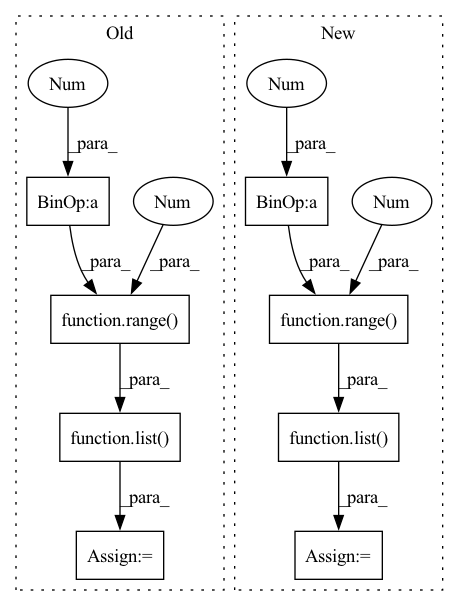

Pattern ID :12944
Before Change
if isinstance(group_dim, int):
group_dim = [group_dim]
self.group_dim = group_dim
self.group_sum_dim = list( range(1 , len(self.group_dim) + 1 ))
self.group_shape = []
self.not_group_shape = []
for i, s in enumerate(self.shape):
if i in self.group_dim:After Change
self.group_shape += [s]
else:
self.not_group_shape += [s]
self.not_group_sum_dim = list(range(1 , len(self.not_group_shape) + 1 ) )
// Get permutation indizes to form groups
self.perm = []
for i in range(self.n_dim):
if i in self.group_dim:In pattern: SUPERPATTERN
Frequency: 3
Non-data size: 8
Instances Fragment ID: 43608697
Project Name: vincentstimper/resampled-base-flows
Commit Name: 7428032ef0198894b7ef617966ed3725ac46e604
Time: 2020-09-25
Author: vincent.stimper@gmail.com
File Name: larsflow/distributions.py
M Class Name: FactorizedResampledGaussian
N Class Name: FactorizedResampledGaussian
M Method Name: __init__(10)
N Method Name: __init__(10)
M Parent Class: nf.distributions.BaseDistribution
N Parent Class: nf.distributions.BaseDistribution
M File Name: larsflow/distributions.py
N File Name: larsflow/distributions.py
M Start Line: 136
M End Line: 137
N Start Line: 138
N End Line: 144
Before Change
self.preEpoch()
loader_len = len(self.loader)
save_every = loader_len//self.conf.save_num
save_list = list( range(0 ,loader_len + 1 , save_every ))
self.save_list = save_list[1:-1]
LOG.logI("SAVE LIST: {}".format(self.save_list))
self.addScalar("{}/LR".format(self.phase), self.optimizer.param_groups[0]["lr"], self.epoch)
After Change
LOG.logI("Phase {} started...".format(self.phase))
self.loader_len = len(self.loader)
save_every = self.loader_len//self.conf.save_num
save_list = list(range(0 , self.loader_len + 1 , save_every ) )
self.save_list = save_list[1:-1]
LOG.logI("Model will be saved on step {} and the epoch end.".format(self.save_list))
self.addScalar("{}/LR".format(self.phase), self.optimizer.param_groups[0]["lr"], self.epoch)
self.preEpoch() Fragment ID: 43608699
Project Name: deepvac/deepvac
Commit Name: 0fb2cef3d105eaf9a0e9e9d8819ebe9a4d147d81
Time: 2020-09-03
Author: gemfield@civilnet.cn
File Name: deepvac/syszux_deepvac.py
M Class Name: DeepvacTrain
N Class Name: DeepvacTrain
M Method Name: processTrain(1)
N Method Name: processTrain(1)
M Parent Class: Deepvac
N Parent Class: Deepvac
M File Name: deepvac/syszux_deepvac.py
N File Name: deepvac/syszux_deepvac.py
M Start Line: 473
M End Line: 494
N Start Line: 482
N End Line: 502
Before Change
LOG.logI("Phase {} started...".format(self.config.phase))
self.config.loader_len = len(self.config.loader)
save_every = self.config.loader_len//self.config.save_num
save_list = list( range(0 , self.config.loader_len + 1 , save_every ))
self.config.save_list = save_list[1:-1]
LOG.logI("Model will be saved on step {} and the epoch end.".format(self.config.save_list))
self.addScalar("{}/LR".format(self.config.phase), self.config.optimizer.param_groups[0]["lr"], self.config.epoch)
After Change
def initStepAndSaveNumber(self):
loader_len = len(self.config.loader)
save_every = loader_len//self.config.save_num
save_list = list(range(0 , loader_len + 1 , save_every ) )
self.config.save_list = save_list[1:-1]
LOG.logI("Model will be saved on step {} and the epoch end.".format(self.config.save_list))
self.addScalar("{}/LR".format(self.config.phase), self.config.optimizer.param_groups[0]["lr"], self.config.epoch)
Fragment ID: 43608701
Project Name: deepvac/deepvac
Commit Name: 56a3a36e3947a900a0f2c6e613a18b7a81453ba1
Time: 2021-05-13
Author: gemfield@civilnet.cn
File Name: deepvac/core/deepvac.py
M Class Name: DeepvacTrain
N Class Name: DeepvacTrain
M Method Name: initStepAndSaveNumber(1)
N Method Name: initStepAndSaveNumber(1)
M Parent Class: Deepvac
N Parent Class: Deepvac
M File Name: deepvac/core/deepvac.py
N File Name: deepvac/core/deepvac.py
M Start Line: 465
M End Line: 468
N Start Line: 486
N End Line: 488